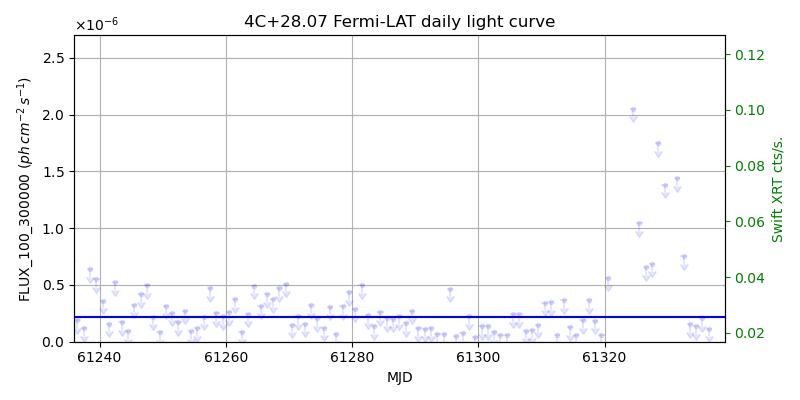
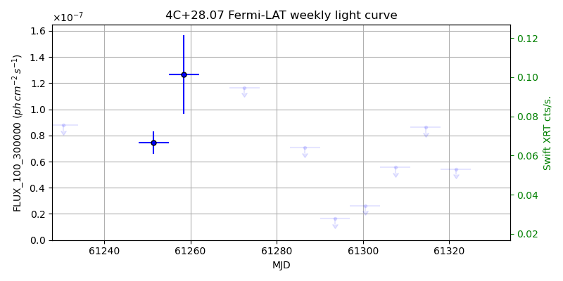
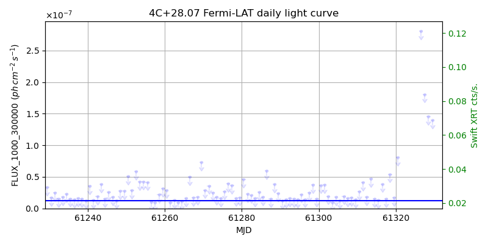
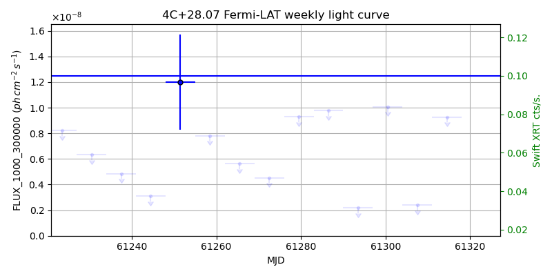

LAT Lightcurve site: https://fermi.gsfc.nasa.gov/ssc/data/access/lat/msl_lc/source/4C_p28d07
Swift site: https://www.swift.psu.edu/monitoring/source.php?source=4C+28.07
NED: Query
Time of last update of this page: UT: 2026-10-24 15:12 (MJD: 61337.634)
| Property | Value |
|---|---|
| R.A. | 2:37:52.32 |
| Dec. | 28:48:07.2 |
| z | 1.213 |
| 3FGL SpectrumType | LogParabola |
| 3FGL PL Index | |
| 3FGL Flux_100_300000 | 2.18e-07 1 / (s cm2) |
| 3FGL Flux_1000_300000 | 1.25e-08 1 / (s cm2) |
| 3FGL Flux >200 GeV | 2.06e-12 1 / (s cm2) |
| 3FGL Extrap. Crab >200 GeV | 0.01 |
| 3FGL Flux After EBL Absorption >200GeV | 1.61e-14 1 / (s cm2) |
| 3FGL EBL Crab Fraction >200GeV | 0.00 |

| MJD | dMJD | Flux | dFlux | Frac3FGL | FracCrab>200GeV | EBLFracCrab>200GeV |
|---|---|---|---|---|---|---|
| 61332.50 | 0.50 | 7.55e-07 | 0.00e+00 | 0.00 | 0.00 | 0.00 |
| 61333.50 | 0.50 | 1.55e-07 | 0.00e+00 | 0.00 | 0.00 | 0.00 |
| 61334.50 | 0.50 | 1.40e-07 | 0.00e+00 | 0.00 | 0.00 | 0.00 |
| 61335.50 | 0.50 | 2.05e-07 | 0.00e+00 | 0.00 | 0.00 | 0.00 |
| 61336.50 | 0.50 | 1.16e-07 | 0.00e+00 | 0.00 | 0.00 | 0.00 |

| MJD | dMJD | Flux | dFlux | Frac3FGL | FracCrab>200GeV | EBLFracCrab>200GeV |
|---|---|---|---|---|---|---|
| 61300.50 | 3.50 | 2.63e-08 | 0.00e+00 | 0.00 | 0.00 | 0.00 |
| 61307.50 | 3.50 | 5.55e-08 | 0.00e+00 | 0.00 | 0.00 | 0.00 |
| 61314.50 | 3.50 | 8.62e-08 | 0.00e+00 | 0.00 | 0.00 | 0.00 |
| 61321.50 | 3.50 | 5.43e-08 | 0.00e+00 | 0.00 | 0.00 | 0.00 |
| 61328.50 | 3.50 | 3.93e-07 | 0.00e+00 | 0.00 | 0.00 | 0.00 |

| MJD | dMJD | Flux | dFlux | Frac3FGL | FracCrab>200GeV | EBLFracCrab>200GeV |
|---|---|---|---|---|---|---|
| 61332.50 | 0.50 | 5.84e-08 | 0.00e+00 | 0.00 | 0.00 | 0.00 |
| 61333.50 | 0.50 | 1.48e-08 | 0.00e+00 | 0.00 | 0.00 | 0.00 |
| 61334.50 | 0.50 | 3.76e-08 | 0.00e+00 | 0.00 | 0.00 | 0.00 |
| 61335.50 | 0.50 | 1.79e-08 | 0.00e+00 | 0.00 | 0.00 | 0.00 |
| 61336.50 | 0.50 | 3.52e-08 | 0.00e+00 | 0.00 | 0.00 | 0.00 |

| MJD | dMJD | Flux | dFlux | Frac3FGL | FracCrab>200GeV | EBLFracCrab>200GeV |
|---|---|---|---|---|---|---|
| 61300.50 | 3.50 | 1.01e-08 | 0.00e+00 | 0.00 | 0.00 | 0.00 |
| 61307.50 | 3.50 | 2.40e-09 | 0.00e+00 | 0.00 | 0.00 | 0.00 |
| 61314.50 | 3.50 | 9.27e-09 | 0.00e+00 | 0.00 | 0.00 | 0.00 |
| 61321.50 | 3.50 | 1.95e-08 | 0.00e+00 | 0.00 | 0.00 | 0.00 |
| 61328.50 | 3.50 | 3.39e-08 | 0.00e+00 | 0.00 | 0.00 | 0.00 |
--------------------------------------------------------- Using user-supplied coords: 2:37:52.32 28:48:07.2 2000 --------------------------------------------------------- FLWO UT night of: 2026-10-25 Local Sid. @ Midnight: 01:50 Sunset (-15.0) (local, UT): 18:49 01:49 Sunrise (-15.0) (local, UT): 05:27 12:27 Moonrise (local, UT): Moonset (local, UT): Moon phase: 0.99 --------------------------------------------------------- AzTime LSID UT Obj_el Obj_az Mn_el Mn_az Sep. --------------------------------------------------------- 18:49 20:39 01:49 14.7 64.8 26.2 94.5 30.0 19:19 21:09 02:19 20.6 67.9 32.4 98.6 29.8 19:49 21:39 02:49 26.6 70.9 38.6 103.2 29.5 20:19 22:09 03:19 32.7 73.8 44.7 108.4 29.3 20:49 22:39 03:49 38.8 76.5 50.6 114.6 29.1 21:19 23:09 04:19 45.1 79.3 56.2 122.3 28.9 21:49 23:39 04:49 51.4 82.1 61.2 132.2 28.6 22:19 00:09 05:19 57.8 85.0 65.5 145.3 28.4 22:49 00:39 05:49 64.1 88.3 68.4 162.2 28.2 23:19 01:10 06:19 70.5 92.3 69.4 182.2 28.0 23:49 01:40 06:49 76.9 98.3 68.2 202.0 27.8 00:19 02:10 07:19 83.1 111.7 65.1 218.6 27.6 00:49 02:40 07:49 87.2 183.7 60.8 231.3 27.4 01:19 03:10 08:19 82.8 249.5 55.7 240.9 27.2 01:49 03:40 08:49 76.6 262.1 50.1 248.5 27.0 02:19 04:10 09:19 70.2 267.9 44.3 254.6 26.8 02:49 04:40 09:49 63.8 271.9 38.2 259.8 26.6 03:19 05:10 10:19 57.4 275.2 32.1 264.4 26.4 03:49 05:40 10:49 51.1 278.1 26.0 268.5 26.1 04:19 06:10 11:19 44.7 280.9 19.9 272.4 25.9 04:49 06:40 11:49 38.5 283.6 13.8 276.2 25.6 05:19 07:11 12:19 32.3 286.4 7.8 279.9 25.4 05:27 07:18 12:27 30.7 287.1 6.2 280.9 25.3 --------------------------------------------------------- Moon up all night, no dark time. Dark hours >55 deg.: 0.00